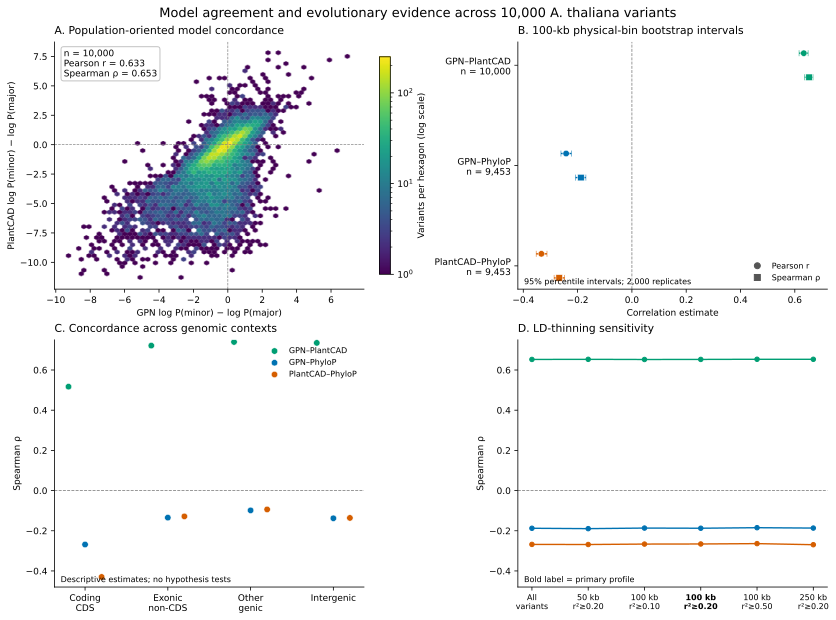
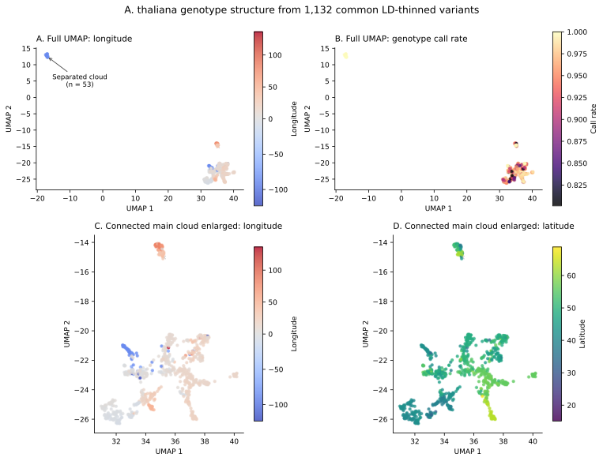
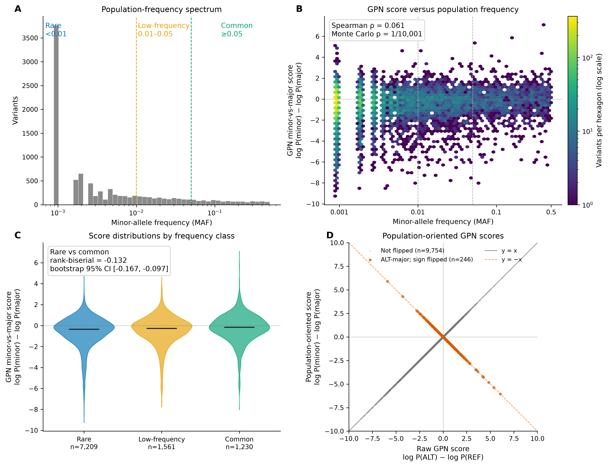

Input integrity
Genome build, chromosome mapping, coordinates, REF/ALT alleles, duplicates, missingness, and sequence context.
A reproducible framework for testing what genomic language-model variant scores mean when they are compared with population-genetic and evolutionary evidence.
PopGenLM Bench has developed from reproducible score validation in v0.1, through population-aware evaluation in v0.2, into v0.3 integration of multiple genomic-language-model scores with evolutionary, genomic-context, LD, genotype-quality, and population-structure evidence.
Every model score is treated as a testable hypothesis — not as a biological conclusion.
Producing a score is an inference step. Establishing what that score means is an evaluation problem.
DNA language models learn statistical regularities from sequence context and can assign scores to large numbers of candidate variants. But a technically valid score is not automatically biological evidence. Before a score is interpreted, its coordinate system, alleles, reference sequence, model revision, orientation, provenance, statistical behaviour, and relationship to independent biological observations need to be checked.
Population and evolutionary genomics provide evidence against which model scores can be evaluated. PopGenLM Bench is designed as the reproducible layer between model output and biological claim: validate the inputs, preserve inference provenance, orient scores explicitly, quantify associations and uncertainty, and state what the result does — and does not — support.
Genome build, chromosome mapping, coordinates, REF/ALT alleles, duplicates, missingness, and sequence context.
Model revision, upstream code, packages, parameters, device, inputs, outputs, runtime, and hashes.
Separate raw REF-to-ALT model scores from population minor-vs-major scores so the biological comparison is explicit.
Evaluate model concordance with allele frequency, conservation, and genomic context, while testing LD sensitivity and summarizing population structure.
v0.3.0 is the latest active release. It integrates population-oriented GPN and PlantCAD scores with evolutionary and genomic evidence for 10,000 real Arabidopsis thaliana population variants selected using a deterministic procedure. The release is organized around a frozen 10,000 × 39 annotated master table, with exclusive genomic-context annotations, signed site-oriented PhyloP conservation, fixed physical-bin and LD-sensitivity analyses, genotype-quality summaries, and UMAP population-structure summaries.
The v0.3 release assets are frozen and hash-verified. Its primary population score is log P(minor allele) − log P(major allele). Raw model scores retain log P(ALT) − log P(REF). PhyloP is site-oriented, not allele-oriented, so its sign is not treated as an allele preference.
The sample-quality summaries contain 1,135 samples in the sample-quality table, 1,093 samples in the primary call-rate set, 996 samples in the strict set, and geographic metadata for 1,131 samples.
These are descriptive associations. They do not show that either model directly measures fitness, selection, causality, or pathogenicity. v0.3.0 claims no hypothesis-test p-values.


The public notebook loads, verifies, summarizes, and displays the frozen v0.3.0 assets. It does not rerun PlantCAD/GPN inference, VCF processing, UMAP fitting, or bootstrap production analysis.
The notebook is pinned to v0.3.0 and checks the released files before loading the descriptive summaries and displaying the frozen figures.
v0.2.0 moves PopGenLM Bench from an engineering fixture to a population-aware benchmark. It uses deterministically selected biallelic SNPs from the 1001 Genomes Project, validates every REF allele against TAIR10.1, combines population summaries with reproducible GPN Brassicales scores, and evaluates the relationship between minor-allele frequency and model score.

The primary population-oriented score is log P(minor) − log P(major). Negative values mean that GPN assigns lower sequence likelihood to the population minor allele than to the major allele.
For variants in which ALT is the minor allele, the raw score log P(ALT) − log P(REF) already has the required orientation. For the 246 ALT-major variants, the sign is reversed. This transformation makes the population comparison explicit; it does not create the observed genome-wide association.
Across the 10,000-variant benchmark:
The result is therefore weak but reproducible concordance, not strong predictive separation. The distributions overlap extensively.
The positive association remains under stricter data filters:
| Analysis | n | Spearman ρ |
|---|---|---|
| All variants | 10,000 | 0.0611 |
| Call rate ≥ 0.95 | 6,761 | 0.0581 |
| MAC ≥ 5 | 5,057 | 0.0876 |
| Call rate ≥ 0.95 and MAC ≥ 5 | 3,279 | 0.1002 |
The association is also positive separately on chromosomes 1–5 and remains positive after excluding each chromosome in turn. This supports the conclusion that the genome-wide direction is not being driven by a single chromosome.
The release notebook is intentionally lightweight. It starts from the frozen population + GPN benchmark rather than rerunning the expensive 10,000-variant GPN inference.
It:
The notebook is pinned to the v0.2.0 release and can be run directly in Google Colab. It verifies the released artifacts before reproducing the main analysis.
v0.1.0 remains an active, frozen PopGenLM Bench analysis fixture. It contains 100 deterministic SNVs with verified GPN scores, together with the score table, metadata, schema checks, descriptive statistics, bootstrap uncertainty, figures, and a CPU-compatible Colab notebook.
The important distinction is that v0.1.0 is an engineering and analysis fixture, not a sampled population benchmark. It established a reproducible analysis path before population-aware evaluation was added in v0.2.0.
v0.1.0 validates score-table structure, metadata, descriptive analysis, bootstrap uncertainty, and figure generation. It does not by itself support population-genetic or evolutionary claims.

The central design principle is separation of concerns. Model scoring, reference validation, population orientation, statistical evaluation, and biological interpretation remain distinct steps. This makes failure modes inspectable and helps prevent a model score from being promoted directly into a biological claim.
Frozen 100-variant GPN score fixture, schema and metadata checks, descriptive statistics, bootstrap uncertainty, figures, and CPU-compatible Colab analysis.
10,000 real 1001 Genomes SNPs, exact TAIR10.1 REF validation, reproducible GPN scores, minor-vs-major orientation, population-frequency evaluation, effect sizes, chromosome-stratified permutation, robustness analyses, figures, tests, CI, and release-pinned Colab.
Integrated GPN and PlantCAD scores, PhyloP, genomic contexts, physical-bin and LD sensitivity, genotype quality, UMAP population structure, frozen assets, and release-pinned documentation.
Stabilize model adapters, support additional model or precomputed-score inputs, expand reporting, add containerized workflows, and test with external users.
Freeze public schemas, incorporate beta feedback, add end-to-end release checks and case studies, and mint a software DOI.
git checkout v0.3.0
pip install -e ".[dev,v03]"
pytest -q
ruff check src tests scripts
sha256sum -c data/benchmarks/v0.3/SHA256SUMS.txtThe public notebook loads, verifies, summarizes, and displays frozen assets; it does not rerun PlantCAD/GPN inference, VCF processing, UMAP fitting, or bootstrap production analysis.
The released population analysis can be reproduced from the frozen artifacts without rerunning GPN inference:
git clone https://github.com/tahirali-biomics/popgenlm-bench.git
cd popgenlm-bench
git checkout v0.2.0
python -m venv .venv
source .venv/bin/activate
python -m pip install --upgrade pip
pip install -e ".[dev,viz]"
pytest -q
ruff check src tests scripts
python scripts/analyze_v02_population_gpn.py
python scripts/plot_v02_population_gpn.pyThe full v0.2.0 release is validated by 58 automated tests and GitHub Actions on Python 3.11 and 3.12.
PopGenLM Bench uses public demonstration and benchmark data. It does not contain unpublished Arabidopsis lyrata results, restricted teaching sources, student work, private credentials, or institution-owned material without permission.
{kind=link}
{kind=link}
{kind=link}
{kind=link}